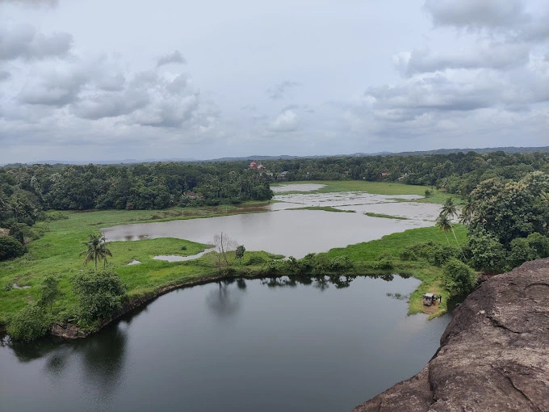

Places you must visit in Chengannur:
- Bhoothakkuzhy Para
- Bangalore Road View
- Nottavan Para View Point
- Chengannur Mahadevar Temple
- Old Syrian Church - Chengannur
- Pandavan Para
Location: Kallisseri Eraviperoor Road, Othera, Kerala 689551
Location: Kurichimuttam - Karimukham Rd, Kanikkavanchi, Kerala 689514
Location: By Pass Road, Chengannur, Kerala 689121
Location: Kizhakke Nada, Chengannur, Kerala 689121
Location: New Street, Chengannur, Kerala 689121
Location: Chengannur, Kerala 689121